Reisebericht
Herrentour Düsseldorf 2025
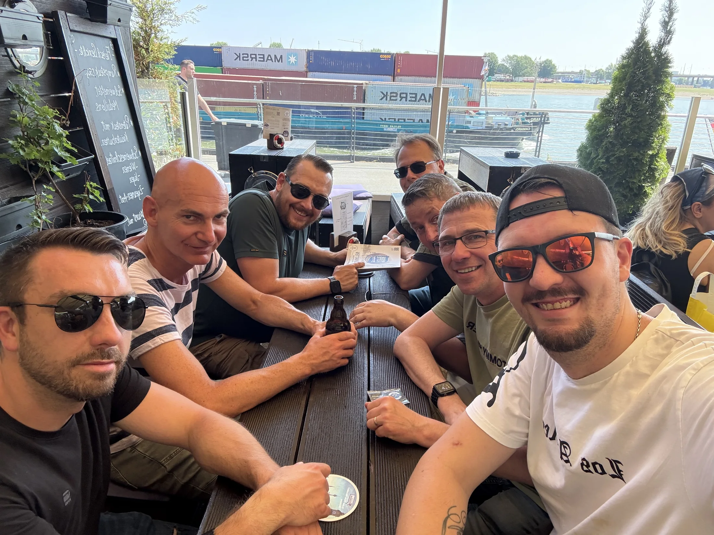
Ein gemeinsamer Tag in Düsseldorf mit Altstadt, Brauhauskultur und einem Spaziergang am Rhein. Zwischen lebhaften Straßen, traditionellem Altbier und vielen gemeinsamen Momenten stand auch bei dieser Tour die Gemeinschaft im Mittelpunkt.
Anreise nach Düsseldorf
Am Vormittag startete die gemeinsame Fahrt mit der Bahn in Richtung Düsseldorf. Nach der Ankunft ging es direkt weiter in die Innenstadt und zu den ersten Stationen des Tages.
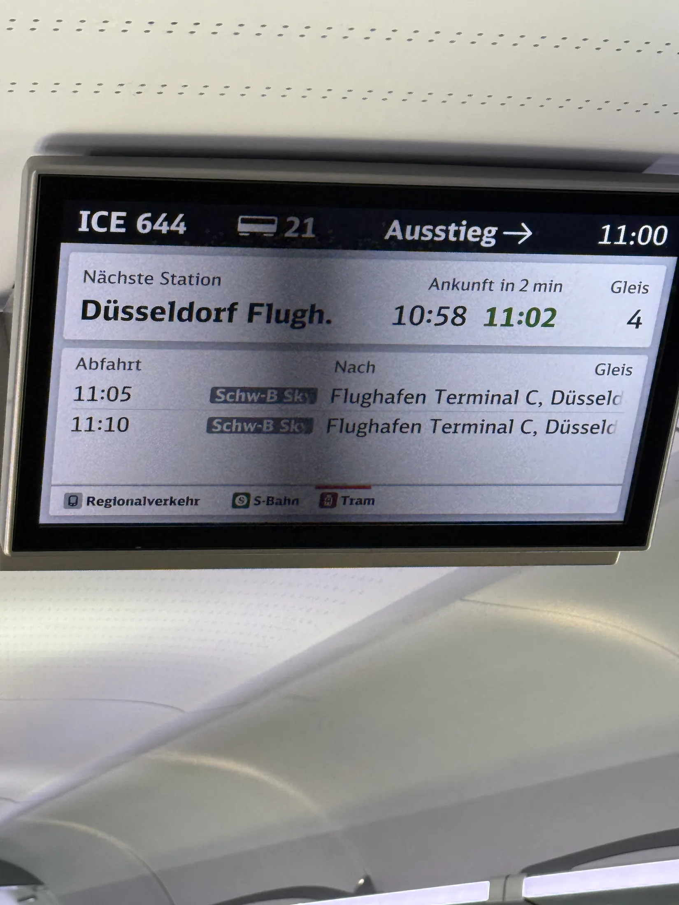
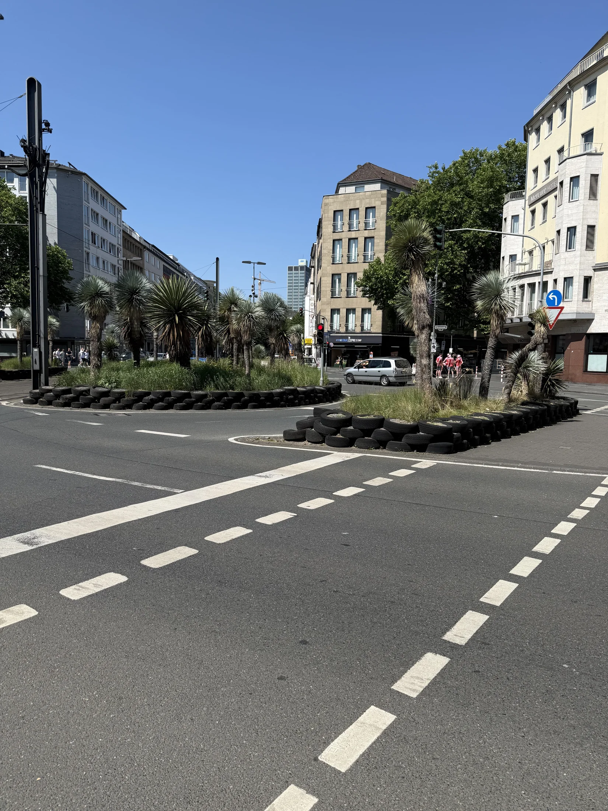
Düsseldorfer Altstadt
Die Düsseldorfer Altstadt zeigte sich bei bestem Wetter von ihrer lebhaften Seite. Gemeinsam ging es durch die Straßen und vorbei an zahlreichen traditionellen Gaststätten und Brauhäusern.
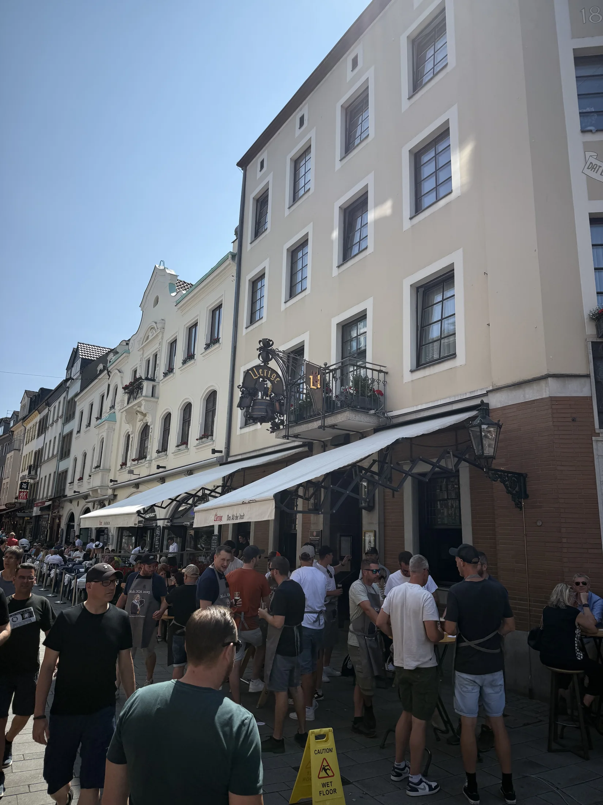
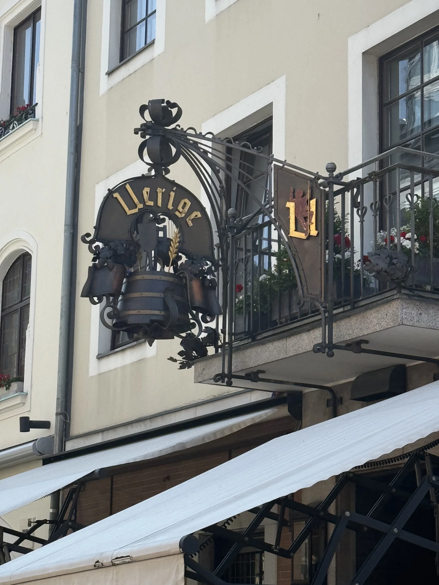
Altbier und Brauhauskultur
Natürlich durfte bei einer Tour nach Düsseldorf auch das typische Altbier nicht fehlen. Bei einer gemeinsamen Pause im Brauhaus blieb genügend Zeit für Gespräche, gute Stimmung und Düsseldorfer Gastlichkeit.
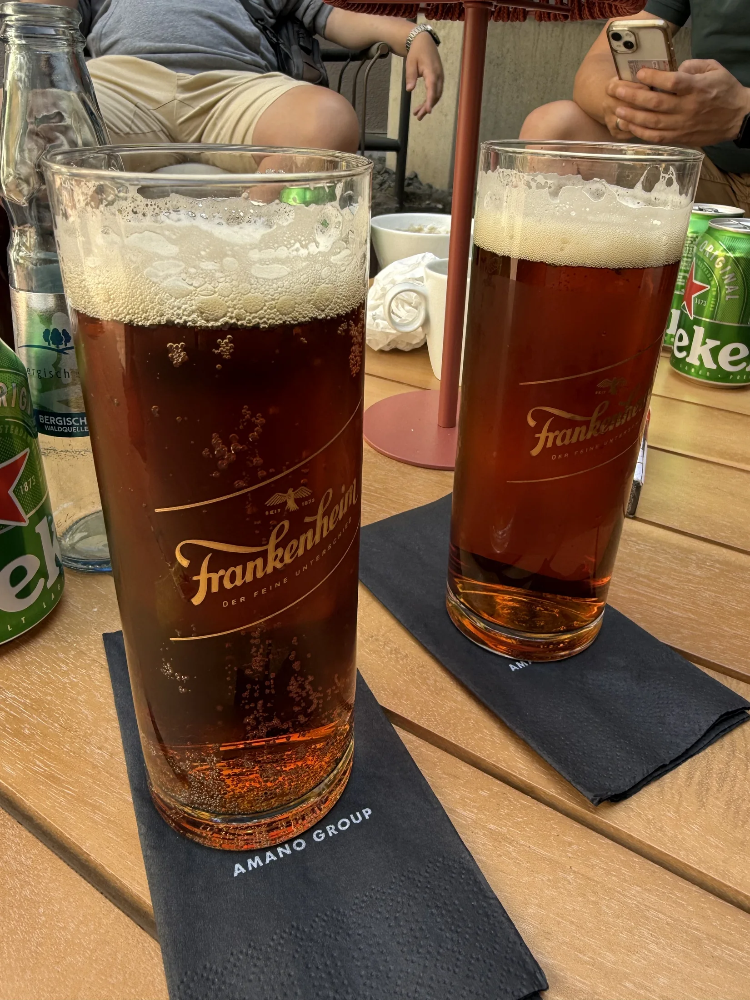
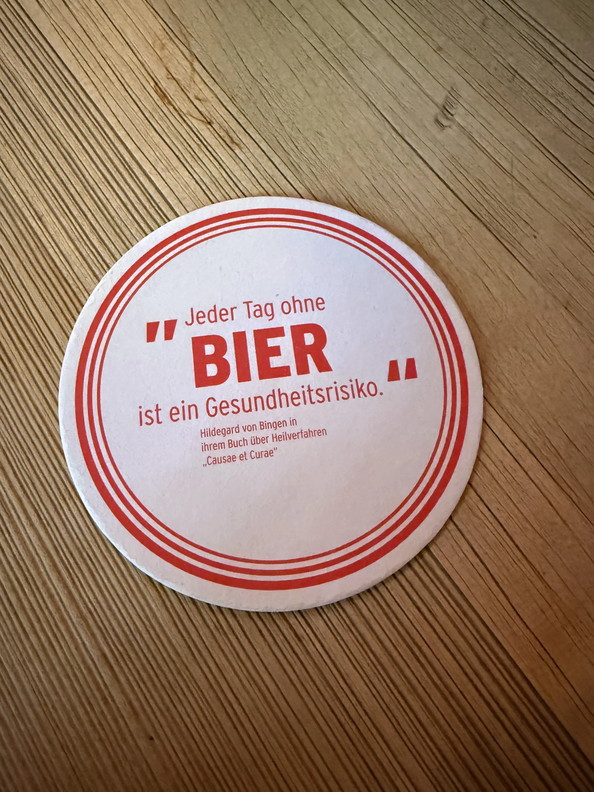
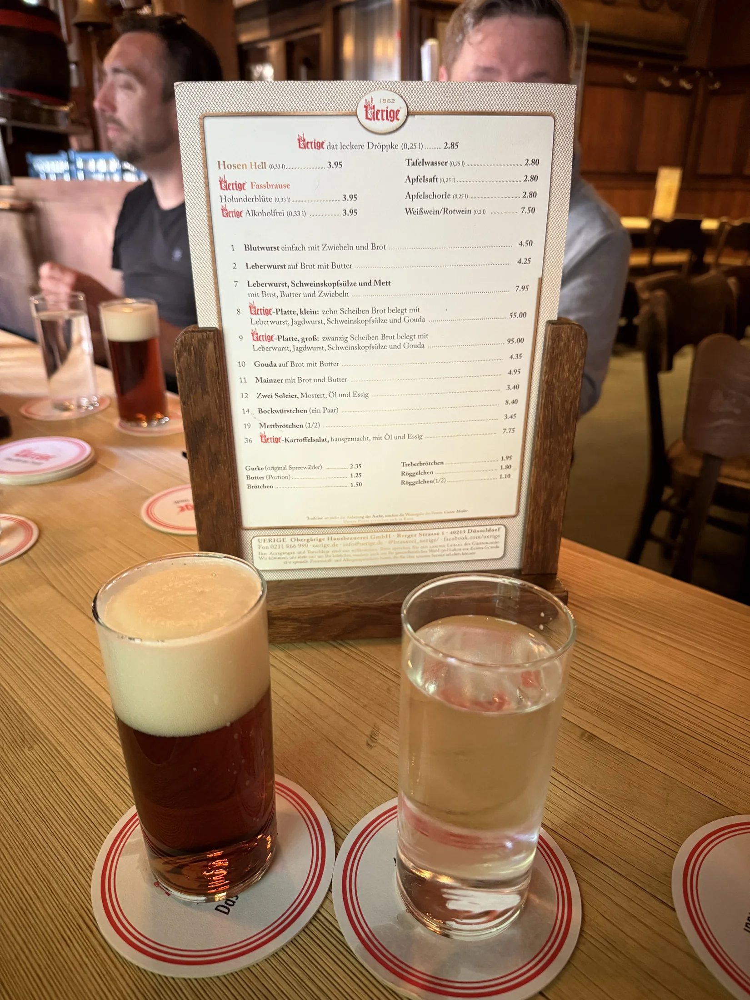
Unterwegs am Rhein
Später führte der Weg zur Rheinpromenade. Der Blick auf den Fluss, die Schiffe und die Stadtkulisse bot einen schönen Kontrast zur lebhaften Altstadt.
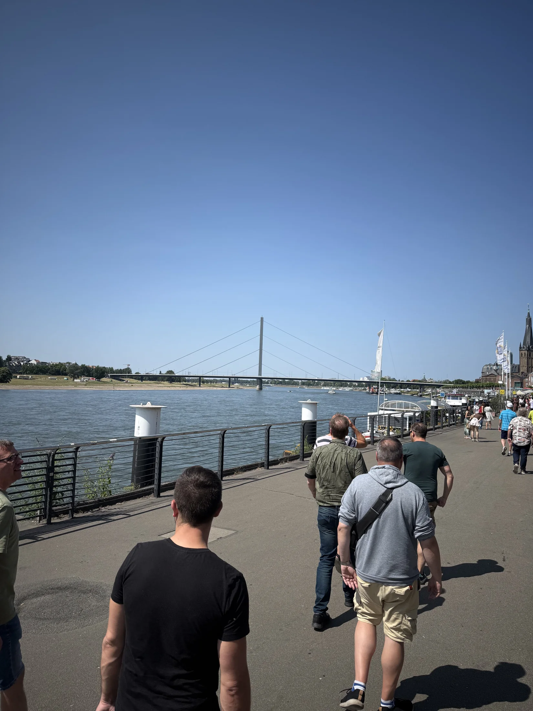
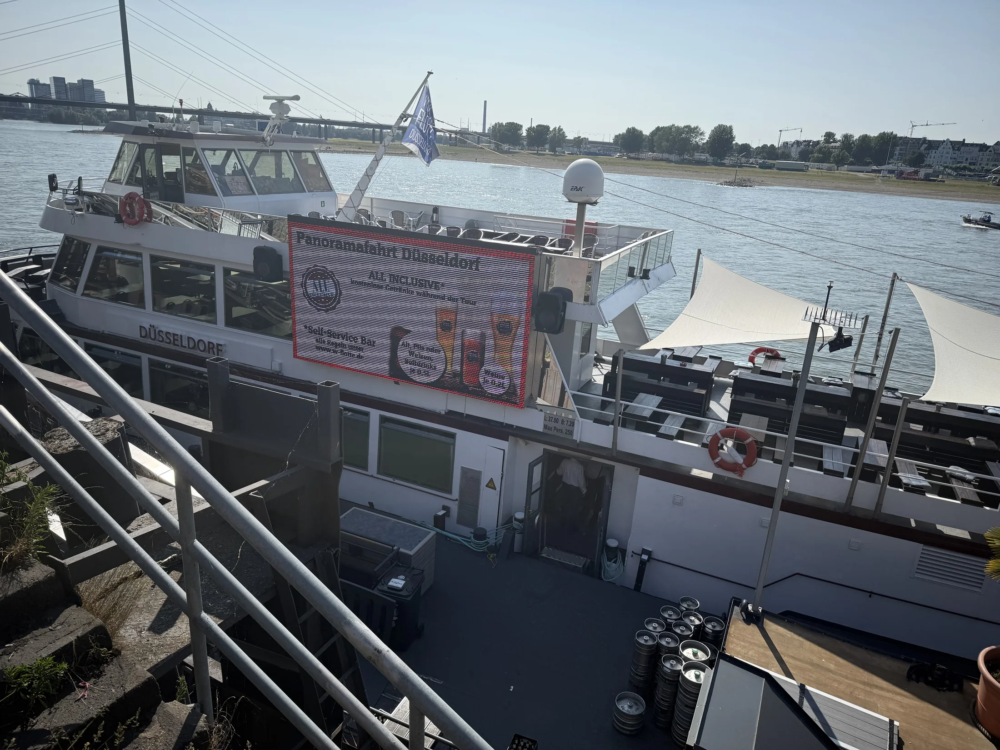
Gemeinsamer Ausklang
Zum Abschluss des Tages wurde noch einmal gemeinsam zusammengesessen. Mit vielen neuen Eindrücken und guten Erinnerungen ging die Herrentour anschließend zu Ende.
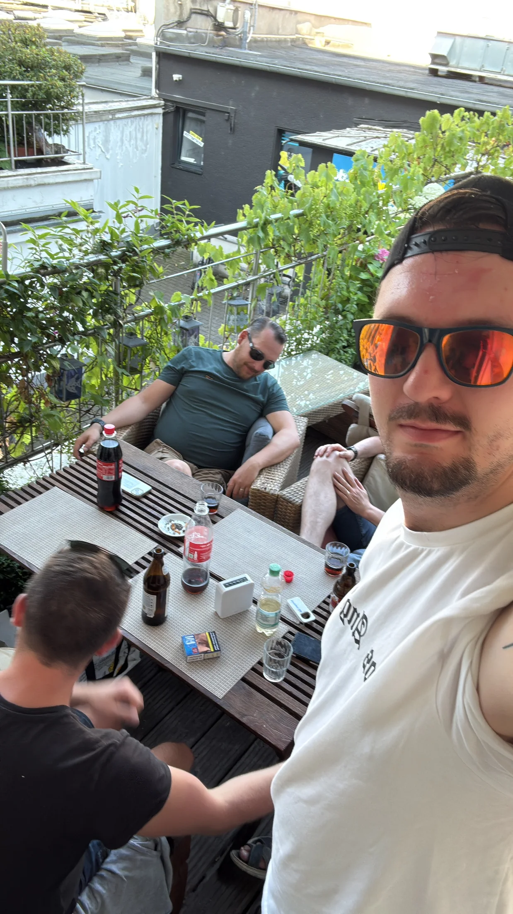
Ein gelungener gemeinsamer Tag, an den wir uns gerne zurückerinnern.
Fotogalerie
Galerie wird geladen …
Video
Video wird geladen …